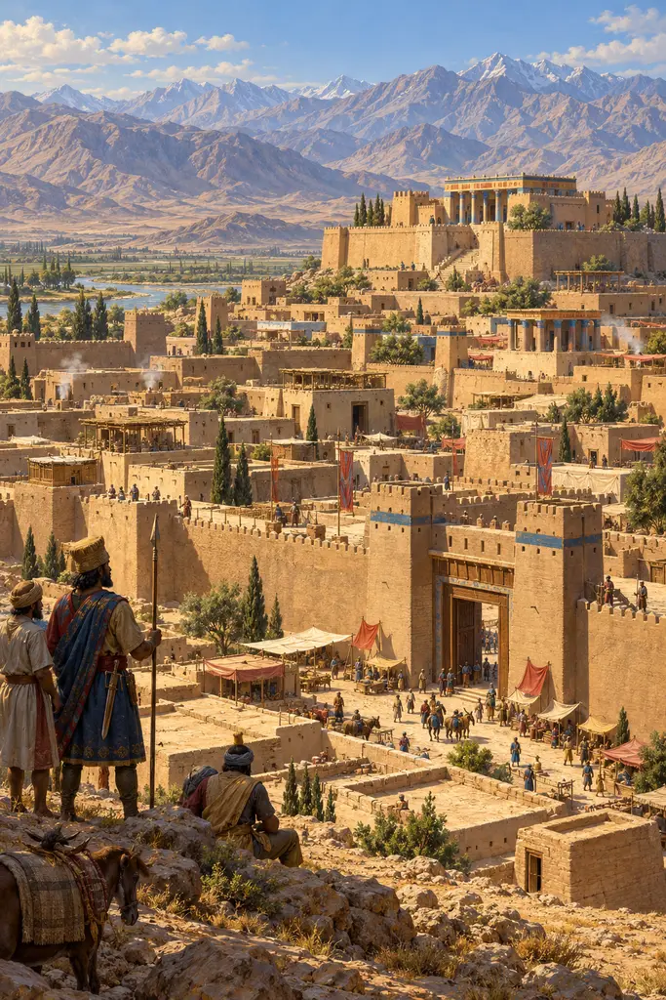
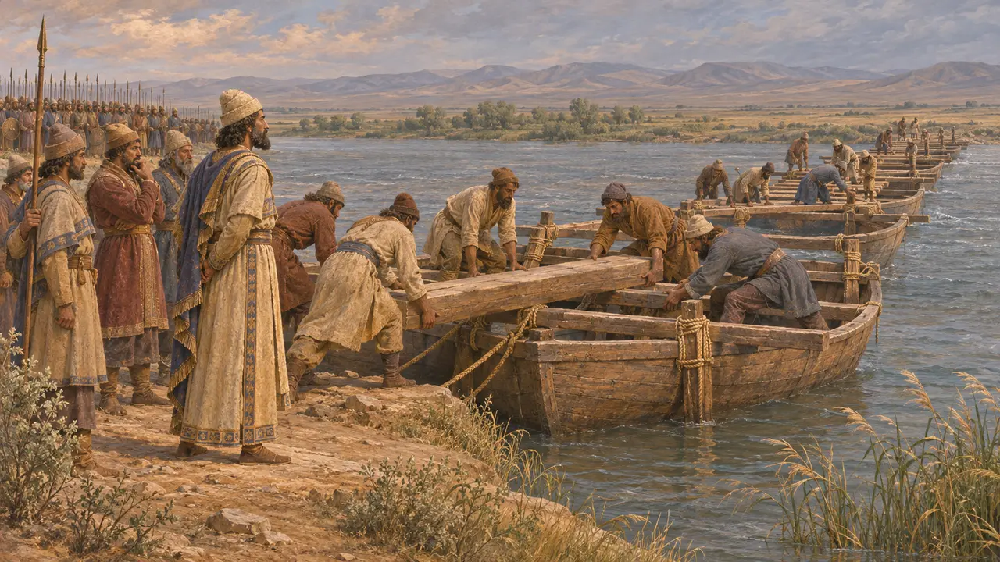
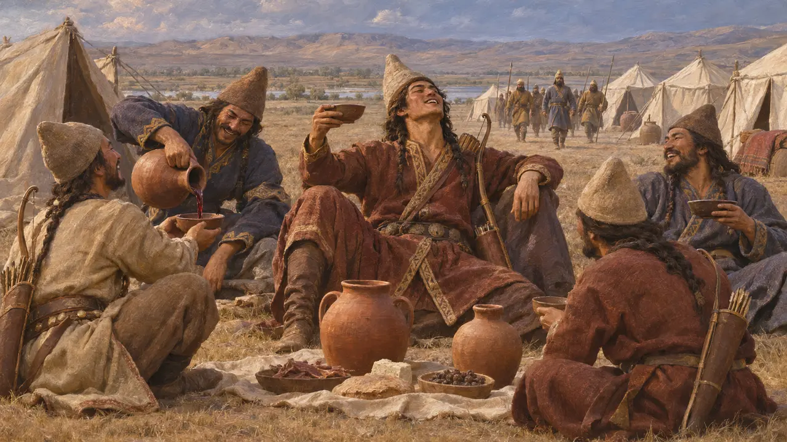
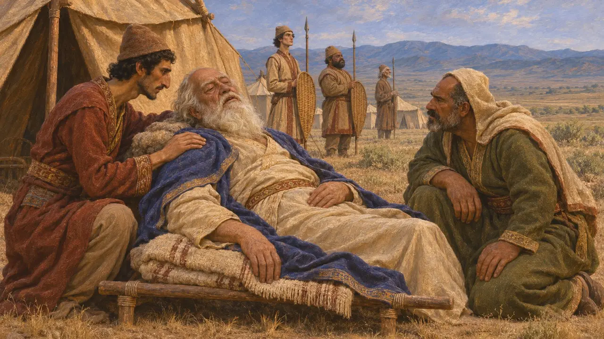
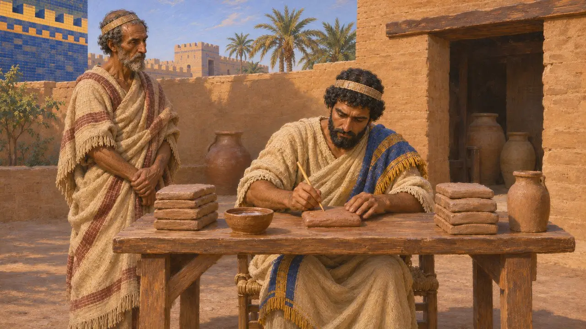
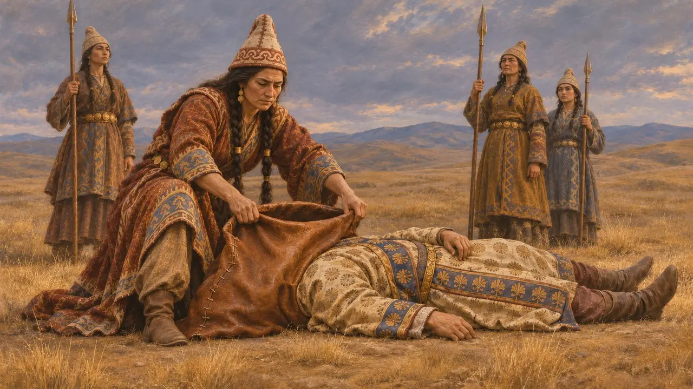

حرب قورش على الماساجيتاي
حملة قورش الأخيرة على الملكة توميريس وراء نهر أراكسيس، نحو 530 ق.م
في اللعبة: المستوى 1: ضريح المؤسس
قادته حملته الأخيرة، نحو عام 530، إلى قتال الماساجيتي، وهم شعب من الفرسان في سهوب شرق بحر قزوين. ويقول هيرودوت إنه عبر نهر أراكسيس وهزمته الملكة توميريس وسقط في المعركة، وإن رواه كتّاب قدماء آخرون القصة على نحو مختلف. وقد أتى موته بابنه قمبيز إلى العرش، ويقول كتّاب يونانيون لاحقون إنه دُفن في القبر الذي لا يزال قائمًا في باسارغاد.
في اللعبة: تذكر حولية باسارغاد أن قمبيز سُمّي وليًا للعهد وأُرسل إلى دياره مع كرويسوس، ثم وفاة قورش وأمرًا بتجهيز ضريحه. ويُرجَّح أن الضريح بُني في حياته، فذلك الأمر تبسيط.

المسير إلى ما وراء الأراكس
رواية قديمةيقول هيرودوت إنه بعد الاستيلاء على بابل، انقلب قورش على الماساغيتيين، الذين كانت تحكمهم الملكة الأرملة توميريس. وعرض أولًا الزواج منها. ففهمت أنه يريد مملكتها لا شخصها فرفضت، فشرع في مدّ جسر على النهر. ونهر أراكس عند هيرودوت نهر ملتبس، وقد طابقه المؤرخون تارة بنهر أوكسوس وتارة بنهر ياكسارتس أو بنهر آخر من أنهار آسيا الوسطى.
Herodotus 1.201-206

تسمية قمبيز وليًّا للعهد والفخ
رواية قديمةبناءً على نصيحة كرويسوس، قرر قورش أن يعبر النهر ويقاتل في أرض الماساجيتيين. وقبل العبور سمّى قمبيز وريثًا له وأرسله إلى بلاد فارس مع كرويسوس. اجتاح ثلث الماساجيتيين، بقيادة سبارغابيسيس ابن توميريس، معسكرًا تُرك مليئًا بالنبيذ، فأقاموا فيه وليمة ثم غُلبوا على أمرهم، وقتل سبارغابيسيس نفسه في الأسر. ويقول هيرودوت إن معظم الجيش الفارسي هلك في المعركة التي تلت ذلك، وسقط قورش بعد أن حكم 29 عامًا.
Herodotus 1.207-214

روايات أخرى عن موت قورش
متنازع عليهيقول هيرودوت نفسه إنه اختار أكثر الروايات قبولًا من بين روايات كثيرة. أما كتيسياس، كما لخّصه فوتيوس، فيجعل قورش يُصاب بجرح قاتل وهو يقاتل الديربيكيين في آسيا الوسطى ويموت بعد ثلاثة أيام. ويُنهي كسينوفون «تربية قورش» بموت قورش موتًا هادئًا في شيخوخته في فارس، وهو مشهد كُتب للتعليم. ويقرّ معظم المؤرخين بأن قورش مات في حملة في الشمال الشرقي، لكنهم لا يقبلون التفاصيل.
Ctesias, Persica (via Photius); Xenophon, Cyropaedia 8.7

ما تثبته الألواح البابلية
في السجلاتلا يوجد نقش فارسي يصف هذه الحرب. كانت ألواح العقود البابلية تؤرَّخ بسنة حكم الملك. وآخر الألواح المؤرخة بعهد قورش تعود إلى أغسطس 530، وتتبعها ألواح مؤرخة بعهد قمبيز في غضون أسابيع، مما يحدد سنة وفاته لكنه لا يحدد مكانها ولا كيفيتها. وكان قمبيز قد لُقّب لفترة وجيزة ملكًا على بابل إلى جانب أبيه في 538، مما يدل على أن خلافته كانت مخططًا لها.
Babylonian dated tablets; P. Briant, From Cyrus to Alexander, 2002

توميريس وقربة الدم
أسطورة لاحقةيختتم هيرودوت القصة بتوميريس وهي تملأ قربة بدم الإنسان، ثم تجد قورش بين القتلى وتغمس رأسه فيها قائلة إنها ستمنحه شبعه من الدم. ويروي أيضًا أن قورش رأى في المنام داريوس مجنَّحًا، وهو تحذير صيغ في ضوء أحداث لاحقة. وكلا المشهدين ينتمي إلى حكاية أخلاقية عن فاتح لم يعرف متى يتوقف، ومن غير المرجح أن يكونا تاريخًا حرفيًّا.
Herodotus 1.209-210; Herodotus 1.214
المصادر
- Herodotus 1.201-214
- Ctesias, Persica (via Photius)
- Xenophon, Cyropaedia 8.7
- P. Briant, From Cyrus to Alexander, 2002
- A. Kuhrt, The Persian Empire, 2007
- Arrian, Anabasis 6.29